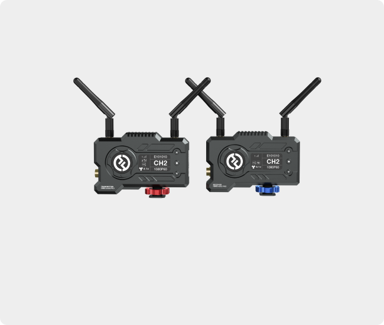

どこからどこへ？
カメラと受信側の位置、距離、遮蔽物、人の動線、周囲の無線利用を共有。
映像をつなぐ・整える ↗EQUIPMENT / 59
ワイヤレス映像伝送
カメラから離れた確認画面へ、映像を無線でつなぐ。
KEY SPECIFICATIONS

画像を大きく見る ＋01 / ROLE & FLOW
実際の配線・端子構成は案件に合わせて決めます。
02 / BEFORE YOUR BRIEF
カメラと受信側の位置、距離、遮蔽物、人の動線、周囲の無線利用を共有。
カメラの出力端子・解像度・フレームレート、受信側の入力、許容遅延と音声経路を確認。
日本向け実機の適合表示・周波数設定・使用場所の条件を確認。電源、取付方法、事前テストも決める。
03 / CHOOSING THE RIGHT TOOL
カメラ映像を離れた場所で確認したいときの構成候補。現場の無線環境と遅延の許容範囲を確認して、有線接続と比較します。
4K伝送機ではありません。カメラの撮影性能と本機の伝送形式は別で、対応する出力設定が必要です。約120mは受信機までの見通し条件の目安で、実際の距離や安定性を保証しません。遅延があるため、舞台と同時に見る映像や別経路の音声は同期を確認します。
送信機と受信機を区別して手配します。受信機のSDIとHDMIは同時出力に対応。アプリ確認は受信機なしで最大4台、受信機1台併用時は最大2台が目安です。標準1TX・1RXセットに電池は含まれず、NP-F電池や充電器、各機の給電、映像ケーブルを別途確認します。国内利用は型式名だけで判断せず、日本向け実機の適合表示・周波数設定・使用場所の条件を確認します。屋外利用可とは一律に案内しません。
撮影位置と受信位置、距離と遮蔽物、屋内外の使用場所、国内向け実機の確認、映像形式、音声経路と許容遅延、受信機・アプリ台数、電源と取付、事前テスト、有線予備経路をお聞かせください。本体・周辺機材・搬入出・設営・本番操作・撤去を分けて、必要な範囲を整理します。